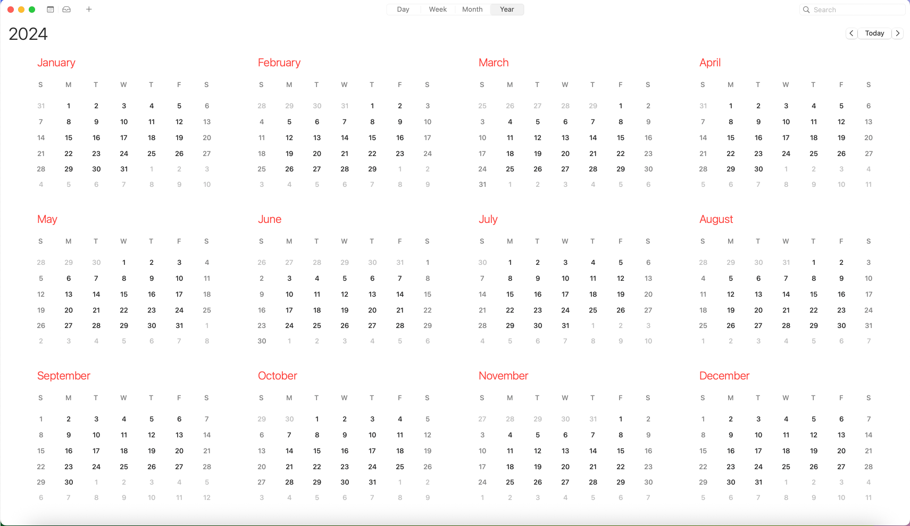
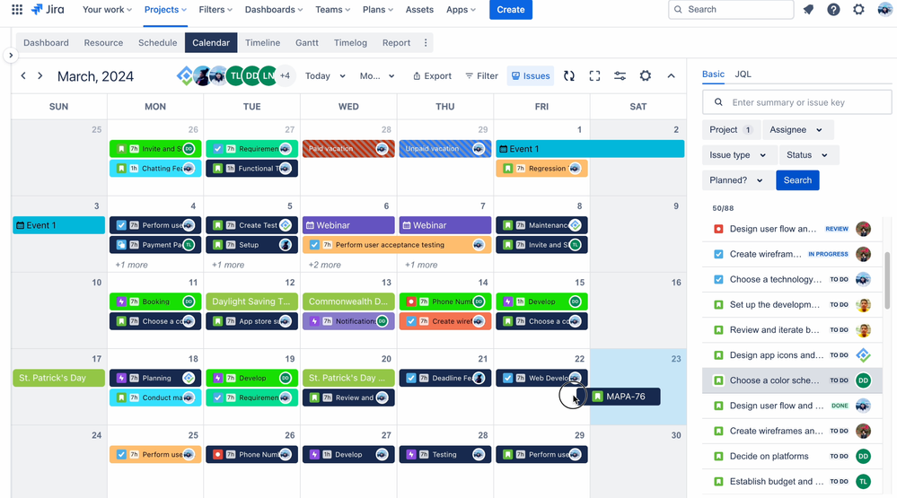
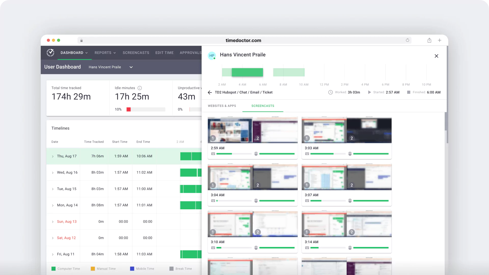
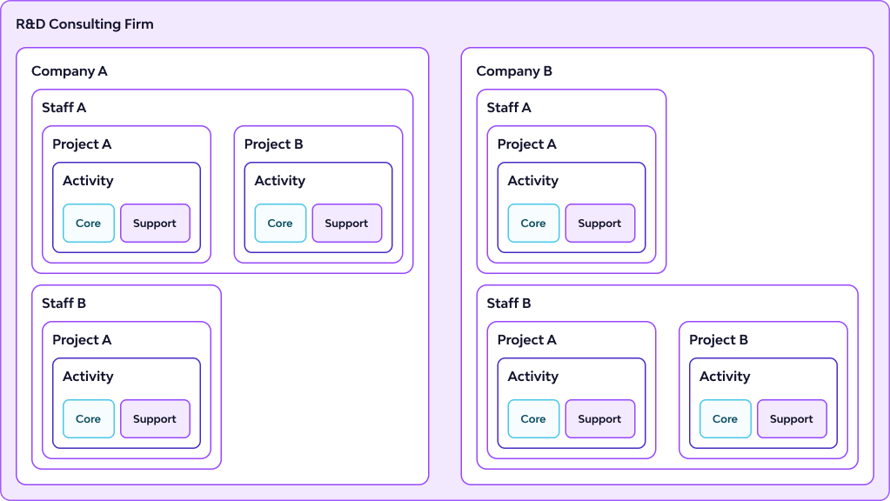
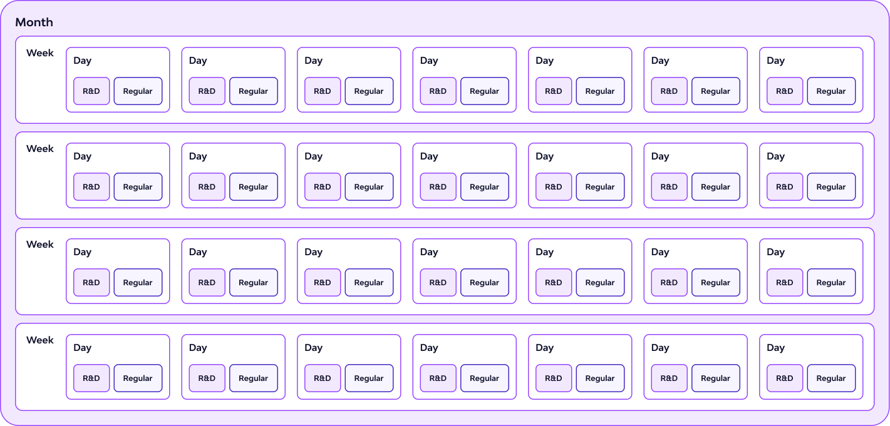

Timesheets Module
Visit onlineCase Study: Designing the Synnch Timesheets Module
R&D hours can be viewed differently according to user's preferences
I. Introduction
Product Context
Synnch is a SaaS application helping Australian businesses manage R&D tax incentive claims. Accurate timesheet data linked to specific R&D projects is crucial for compliance. Target users for this UI include staff performing R&D, project managers, and consultants overseeing claims.
Project Goal
To design an intuitive and efficient user interface for staff members and managers to view, track, and manage R&D hours within the Synnch platform.
The Problem
Businesses claiming the R&D Tax Incentive face a critical disconnect: compliance requires timely, detailed timesheets, but workflow realities often push R&D documentation to the last minute. This results in:
✅ Inaccurate Data Hours were often guessed instead of accurately tracked, putting the R&D claim at risk.
✅ Reporting Issues Managers found it difficult to monitor and confirm R&D work across the team throughout the year.
✅ Financial Loss Using rough estimates and inconsistent staff rates led to smaller R&D claims than what could have been recovered.
✅ Poor Visibility Staff and managers lacked intuitive tools to easily log, view granular R&D effort (by day/week/month), or compare team contributions effectively, hindering both accuracy and timely completion.
My Role & Responsibilities
UI/UX Designer. Responsibilities included user flow mapping, wireframing, prototyping, visual design, interaction design for the timesheet viewing/entry interface. Collaborated with Product Owner, Developers
Constraints & Timeline:
1. Existing Platform Integration: We joined the project after core Synnch modules were already developed:
- Projects Module: Contained detailed R&D activity descriptions.
- Expenditure Module: Integrated with Xero to pull financial data, including staff wage information essential for timesheet value calculation. The new Timesheets UI had to seamlessly integrate with this existing architecture, ensuring data compatibility and technical feasibility (e.g., accurately linking R&D hours to specific projects and staff data from the Expenditure module).
2. Design System Adherence The Synnch owners provided an existing UI kit and style guide. All new designs were required to strictly adhere to this established visual language and component library to ensure platform consistency.
II. Discovery and research
👥 User Personas
Consultants
Claimants
Admins
Staff Members
🔍 Methods Used
To inform the design of the Timesheet module, I engaged in multi-layered research involving both business and user perspectives:
1. Stakeholder Interviews
Held discussions with the CEO, Owner, Business Analyst, and Developer from the Synnch team to understand business goals, compliance requirements, and system constraints.
2. User Interviews
Gathered narrated insights from a small group of R&D consultants who regularly interact with the end users and manage claims across clients.
3. Regulatory Analysis
Reviewed R&D claim requirements, focusing on the specific data compliance expectations for contemporaneous time tracking (as mandated by the ATO in Australia).
💡 Key Insights & Design Implications
-
Need for Focused Simplicity & Efficiency
Staff are often engineers, not admin-focused users — they need to get in and out fast.
Insight: The Timesheet UI needed to be extremely streamlined to reduce cognitive load and time-to-completion.
Design Implication: Prioritized minimal-click workflows, inline editing, and default values for repeat actions.
-
Accurate Project/Activity Linking is Critical
If hours aren’t correctly tied to the right project or activity, the whole claim can fall apart.”
Insight: R&D claim eligibility is entirely dependent on accurate attribution of hours to predefined projects and activities.
Design Implication: Designed a guided time-entry flow that emphasizes clarity and simplicity in project/activity selection, with error prevention built in.
-
Differentiating R&D vs. Non-R&D Hours is Essential
People don’t just do R&D all day — but we only want the eligible parts.”
Insight: Staff perform a mix of eligible and ineligible tasks throughout the day.
Design Implication: Created an intuitive toggle/indicator to clearly differentiate R&D-eligible hours at the point of entry, reducing the risk of contamination in reporting.
-
Leverage Familiar Patterns for Faster Adoption
Make it feel familiar — like their calendar app.”
Insight: Reducing the learning curve improves adoption and consistent usage.
Design Implication: Borrowed UI patterns from tools like Outlook, iOS/macOS Calendar, and Time Doctor to ensure comfort and recognizability.
-
In-Context Guidance Improves Data Accuracy
Some activities can be a grey area — users need help deciding.”
Insight: Users need contextual nudges to log hours accurately.
Design Implication: Embedded lightweight tooltips, project links, and descriptions within the time entry flow to guide users without disrupting their process.
-
Role-Specific UI Needs
Staff Members (Primary Users):
Need a fast, minimal UI focused on logging hours against the correct projects and activities. Shortcuts for recently used tasks and smart defaults improve efficiency.
Timesheet Admins (Secondary Users):
Use a separate interface to review and validate data. Their need for clarity and traceability informed the design of the submission flow and data granularity.
Claimants & R&D Consultants (Indirect Users):
Rely on clean, structured data for audit readiness and multi-client reporting. The foundational accuracy of staff-entered timesheets directly impacts their workflows.
III. Ideation and design exploration
-
Research & Inspiration Gathering
To start, I examined a variety of timesheet and calendar-based enterprise platforms for UI inspiration, including:
- ✅ Outlook
- ✅ iOS and macOS Calendar apps
- ✅ Time Doctor
- ✅ Atlassian tools
This helped me understand different interaction models, layout options, and UI components commonly used in time management systems.



This timesheet design takes inspiration from Outlook and macOS calendars for familiar scheduling, Time Doctor for detailed time tracking, and Jira for linking work to specific tasks and projects.
-
Understanding the Domain & User Roles
Since this platform is focused on R&D Tax Incentives (R&DTI), I invested time in building deep domain knowledge by:
- ✅ Watching explanatory videos on R&DTI requirements and processes
- ✅ Speaking directly with clients and users
- ✅ Mapping out workflows for various user roles (e.g., admin, staff, auditor)
I created several diagrams to capture relationships between projects, activities, R&D hours, and compliance rules, ensuring a mental model that’s accurate and usable.
-
Visualizing R&D Time Granularity
I explored how best to represent R&D hours with varying time scales — daily, weekly, and monthly — for each staff member.
I sketched various data visualization approaches, including:
- ✅ A colored time-grid showing R&D engagement across time
- ✅ Table views with hierarchical structure (staff → project → activity → time blocks)
These helped align the visual representation with both user needs and compliance documentation formats.


I visualized the data from day-to-day activity up to the full financial year to see how each piece fits into the bigger picture. Using color helped distinguish core (cyan) and supporting (magenta) activities, allowing me to design a UI that makes both detailed and layered data easy to understand—like how R&D hours vary per staff, per day, and project.
-
Platform Integration
Throughout the design process, I ensured that the new timesheet designs would integrate well with the existing platform and other modules, both visually and functionally. Consistency was key — in component behavior, layout spacing, and data hierarchy.
-
Export & Documentation Considerations
Given that government agencies (e.g., AusIndustry or ATO) may not access the platform directly:
- ✅ We introduced CSV export functionality
This export can serve as both a documentation backup and an attachment for audit purposes
This decision ensures compliance beyond the platform’s boundaries.
-
Audit-Readiness & Transparency
I considered potential audit scenarios and designed for clarity. The platform should:
- ✅ Present a clear, traceable log of R&D hours and project involvement
- ✅ Be intuitive for both the claimant and auditor to navigate without training
Designing with auditability in mind added constraints but helped sharpen the product’s value.
IV. Iteration and UI Decisions
Problem:
In a traditional calendar view (daily, weekly, monthly), not all details can fit on the screen, especially when multiple staff members are selected.
Solution:
To address this, I explored alternatives and landed on the side panel pattern:
- A persistent side panel provides context without obscuring the main view
- It allows users to click through records while still seeing what’s underneath
- Compared to modals, it avoids breaking flow and reduces navigation friction
This component became essential for displaying detailed logs, comments, or evidence attachments linked to a selected time entry.
 The side panel lets users view and edit details while keeping the main table visible—making multitasking smooth and uninterrupted.
The side panel lets users view and edit details while keeping the main table visible—making multitasking smooth and uninterrupted.
V. Design Execution
Translating the insights into a user-centered solution involved designing an intuitive interface for viewing, adding, and managing R&D hours, while adhering to the existing platform's constraints and style.
Multiple Views (Daily, Weekly, Monthly, Table, Detailed):
Users can seamlessly switch between daily, weekly, monthly, table view, and a detailed side panel view using clear tabs or buttons. This caters to different user needs – from quick daily checks to weekly summaries and in-depth data scanning.


Multiple timesheet views—daily, weekly, monthly, and table view —to support different user needs and levels of reporting detail.
Consistent Interface & Design System Adherence:
Leveraging Synnch's established design system and UI kit was foundational. This ensured visual consistency with the rest of the platform, provided familiarity for existing users, streamlined development, and reinforced the brand identity.
Flexible Viewing & Navigation:
Recognizing the need for different levels of analysis and user roles, the design incorporated intuitive navigation elements:
✅ Financial Year & Date Controls:
Clear controls allow users to easily navigate to specific time periods relevant to R&D claims.
✅ Staff Selection:
A straightforward selector enables switching between viewing an individual staff member's detailed hours or comparing multiple staff members side-by-side, catering to different review needs.
✅ Handling Complexity (Multi-Staff View):
While designing the multi-staff comparison, we prioritized clarity and performance. Displaying a full monthly calendar view for multiple staff simultaneously presented significant UI clutter and potential performance challenges. Therefore, the multi-staff comparison effectively focuses on daily and weekly granularities, addressing the primary comparison needs identified in research.
Core Functionality & Data Management:
Adding R&D Hours:
A prominent and easily accessible 'Add R&D Hours' action allows staff members to quickly log their time, link it to the relevant R&D project/activity, and differentiate R&D vs. non-R&D hours, directly addressing their primary task.
 Clicking 'Add R&D Hours' reveals dropdowns and input fields for hours, descriptions, and evidence—keeping everything in one place for fast, accurate entry.
Clicking 'Add R&D Hours' reveals dropdowns and input fields for hours, descriptions, and evidence—keeping everything in one place for fast, accurate entry.
Information Accessibility (Side Panel):
To keep the main timesheet views clean and scannable, detailed information (like full activity descriptions, evidence links, or notes) is accessible via a contextual side panel. This panel appears upon selecting a specific time entry, providing comprehensive details and also serving as the location for editing existing entries without losing context.
Data Portability (CSV Export):
An 'Export to CSV' function is included in relevant views, allowing users to easily extract timesheet data for offline analysis, reporting, or specific auditing requirements.
Micro Interactions and Feedback
Subtle visual feedback upon successful time entry provides immediate confirmation to the user. Furthermore, inline validation within the 'Add Hours' form proactively guides users to not enter hours beyond their daily working hours.
VI. Validation and Iteration
During the development handoff, the dev team raised an important need that wasn’t part of the original scope: the ability to set individual working parameters for each staff member. This included things like full-time vs. part-time status, standard daily or weekly hour limits, and overtime handling—key details needed to ensure accurate R&D compliance.
To address this quickly, I designed a new Staff Settings page. Using the existing Synnch design system, I created a clean and consistent interface with standard fields and checkboxes. This addition was implemented smoothly and helped improve timesheet accuracy and flexibility, without affecting the overall development timeline.


Multiple staff view (daily & weekly) alongside the new Staff Settings page—added mid-development to support individual working parameters like part-time status, hour limits, and overtime, ensuring accurate R&D tracking
VII. Learning and Reflection
This project offered valuable lessons in designing for a growing SaaS platform with real-world complexity:
-
Designing for Consistency Across a Live Platform
Working within the existing Synnch platform taught me the importance of maintaining visual and functional consistency. Using the established design system wasn't just about staying on-brand—it streamlined development and ensured a smooth, unified experience across modules.
-
Adapting to Evolving Requirements
Like many SaaS projects, the scope changed as we uncovered new needs. Features like the multi-staff view and the Staff Settings page emerged mid-way. I learned to stay flexible, collaborate closely with Product and Dev teams, and iterate quickly without losing sight of the core user experience.
-
Cross-Functional Collaboration Drives Better Design
The idea for the Staff Settings page came directly from discussions with developers. It reminded me how technical feedback can surface hidden UX requirements. Staying connected with all disciplines—tech, product, and stakeholders—helped shape more complete and user-focused solutions.
-
Anticipating Hidden Complexity
At first, timesheet entry seemed straightforward. But as we dug deeper, we realized R&D calculations required dynamic handling of staff roles (full-time, part-time, overtime). Building flexibility into the design early helped us future-proof the experience as those needs became clearer.
-
Balancing Multiple Design Tracks
Throughout the project, I balanced designing new features, reviewing previous work, and planning for future iterations. This taught me to prioritize effectively while still maintaining consistency and clarity across the product.
-
Designing Without Full Validation (Handled Carefully)
In some cases, we had to move ahead before getting direct user feedback—especially when timelines were tight. I leaned on stakeholder insights, UX best practices, and clear documentation to reduce risks and stay user-centric even when iteration came fast.
🗝 Key Takeaway:
This project was a hands-on lesson in designing for the realities of SaaS: evolving requirements, technical constraints, and the need to integrate new features into an existing ecosystem—without compromising on user experience.